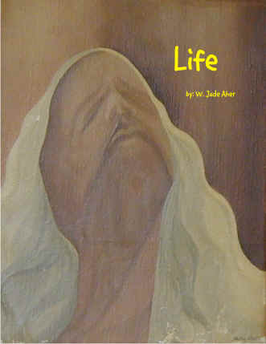

1968
just a boy
just another summer
heard a death
walk in silence
across his breath
suddenly
just a boy
turned
to see
a man in the mirror
it was he
just a boy
took a chance
to see, to believe
wrote his first poem
for bobby
wrote his second poem
for a girl
a girl who
never heard his name
just a young man.
jude
1969
if he could dream
when dared the scream
to dance alone
within the fall of light.
jude
1970
lost
deep cold water
dreams which only
echo
her eyes had
once broken open
his sighs
song
bleeds beauty
and on nowhere street
a young man
turns
and dares
to long for.
jude
1971
walking blues
war time news
highway sand
on the soles
of my shoes
long summer dreams
hold to the silence
of all my screams
lost days of
running free
from sea
to shining sea
jude
1972
midnight sky
long rocky mountain try
so huge were
those star dreams
that
on free earth
in thin air
i felt my soul
grow
large
alive
where whispered
a universe
a pulse
a truth
morning sky
long rocky mountain sigh
i heard her footsteps
her sweet beauty
recede
from a boy
lost
to a season
new york city sky
long rocky mountain seed
where rhyme bleeds
across tomorrow.
jude
1973
loved a child
lost a child
loved a child lost
san francisco hippies
fog across my vision
i danced
one long night
so alone
loving the one i was
with!
so alone
within a song
within a
san francisco dream.
jude
1974
just a poet sketching
hard concrete
on a canvas of silence
just a man
young and dancing
believing
trying
to paint a child
free
trying to own
that
which could never
be,
new york city talking
walking
dying
beneath the
quiet tears
as she pleaded
to carry her away,
child of light
child of night
just a poet lost
just words
just a man
leaving
breaking
learning
to say good-bye
and silence.
jude
1975
late night
new york city shadows
all night walks
caught between echoes
caught alone
far away
where
trees carry shade
where
leaves walk color
into death
small town silence
falls upon
late night walks
caught alone
within the words
as the play
written for the day
a long breath
across an actors fall.
jude
1976
caught within
a woman and child bleed
a cold spring
in philadelphia
where was planted a seed
a dance begun
a touch of sun
a man dares
to carve
a family tree
without a genetic stain
his dance
sweet rain
just a poet
just a chance
jude
1977
an auguste rodin museum
a mummer’s parade
rhyme in discord
a child runs away from
home
just to escape
an explosion of
truth and bricks
as a city takes a stand
against a stain upon
religion
a child hippie jailed
for riding a bike
a job lost
on a call of honor
the liberty bell
finds another crack
starting
and all unseen
with vietnam
a war ended,
no one cares
dares
to see anymore,
lost in philadelphia
jude
1978
a little jazz
a river song
life
trying to belong
manhattan refrain
new york city blues
hard loving
deep stain
jude
1979
castle on a north
manhattan hill
sword fighting
upon a medieval field
dance
young child
such beauty
in a white dress
education
bicycle riding
stain upon stain
dance
woman learning guitar
lincoln center calls
sigh upon her refrain
a man loving
walks within
a hudson river rain
just a family
without a name
dancing
jude
1980
songs on a highway
long hair and
a vw mini-bus
deep within a poet’s dream
a man smiles,
young my daughter
sings her broken songs
across an open window’s
sighs,
no time to forget
no time to remember
no time to bleed,
a woman turns to see
as the seasons call
motion sweet ocean.
jude
1981
late night
walking
central park west
footsteps echo
singing the blues
my woman
my child
singing the refrain
just a moment
in time
which still calls
falls
sweetly
one recalls
before
one dares to dream
before
one dares to see,
autumn in its season.
jude
1982
river talking
walking across
the silence
within my dreams
wandering
fathering
believing
in the water which flows
daylight dancing
long roads
carved within
the circle of life
chancing
the shadows
which cast
deep across tomorrow.
jude
1983
street-side windows
old woman leaning
watching
children play
between parked cars
and their young
street dreams
just a week-day passing
in new york city, queens
bicycle riding
your child learning
apartment living
not the dream
but
sweet, sweet wind
blows so free,
when life
speaks from the heart.
jude
1984
saturday afternoon
6th avenue
greenwich village refrain,
an irish bar
a concrete sidewalk
a glass of wine
a young girl
without a last name
a young woman
watching people in dress
a mad man
poet
aging hippie
writing words to stain
warm air
cast in shadows
slow in crossing the street
no clocks call
as time falls
across the rhyme
of a saturday afternoon
jude
1984b
when family screams
and it rains all day long
when death breaks
across all the rest
time shifts
and honor calls,
north florida sun
when one can walk
then
why run
where sand stalls
water reaches deep
where footprints stand
and then
water retreats
long summer dreams
just what do they mean.
jude
1985
if
your mother-in-law
lies
caught deep within
a long
north florida rain
washes clean the sand
good schools
a deep nights refrain
nothing is
and yet
all is the same
"almost cut my hair"
no despair
young man cut his hair
ever warm days
fall
where mountains
never stain
slow dancing
in a north florida rain.
jude
1986
slow afternoon
sipping beer
music playing
live guitar
and musicians swaying
rhythm in song
the milltop
st. augustine
soft afternoons
watching the river
child at my side
dolphins playing
swimming in song
just a moment
a bit of love
a young hand in mine
a universe
who echoes true
sweet poet blues
love jude
jude
1987
where northern winds blow
time
a daughter in high school
time
old
very old
white house
still standing
time
child to woman torn
new york
armonk
small town illusions
turn
mad poet to writer
burns
life returns
greenwich village
bookstore blues
time.
jude
1989
what if a man
or hippie
opened his house
opened his home
would friends
become family
would they
therefore remain
once the days sun
set
when light turned to rain
what would the years
whisper
time
time again.
jude
1990
a father’s moments
they come and go
when his daughter
rejects his love
starts college
begins to grow
deep
seeds
he touched the blood
which isn’t his
just
to watch her
just to love her
just to feed her
to believe in her
a father’s moments
they come and go
jude
1991
silence and rhyme
lost fingers
across a long dream
a paris street
wine
and walking feet
losing words
written
upon a windless desert
dreams
a tired man’s sleep
defeat
and no reason why
jude
1992
when the words are gone
lost upon a winter lawn
dreams are found
and
empty souls abound
a man could die
or
fight the water
and sigh
but again and again
until
jude
1993
in of quiet
within a broken mind
barely walks
barely talks
if
evermore
jude
1996
when a river calls
dare
a crippled man
listen
he always moves
nature
forever and again,
accessibility
river
talk to me
another moment,
in nyack, ny
jude
1997
easy time
easy rhyme
long river
ever moving
passing
leaving just a man
behind,
and in his quiet
empty carving
starving
river sand
dry and blowing
jude
1999
when the banshee sings
rhyme upon
an emergency room floor
a man can
but wait
outside
from where a
a stopped heart resides
listening
watching
to live
or to die
waiting in the silence
a kiss for luck
in the darkness
jude
2000
bones, bones
dying bones
faces carved on
empty white
dare you live
dare you die
hearts break
as souls shake
live
die
man still won’t cry
never asked why
suddenly
a spring wind
blows
an open window
echoes
a taste of the river
life within his eyes
a poet sighs
jude
2001 (disabled)
i remember a world
i remember the battles,
i now stand aside
in broken stride,
the echoes remain
a stain upon my dreams
for i am no longer
more then i am.
but neither am i a mirror,
nor do i cry
owe me nothing
keep your fear,
yet while i'm alive,
i will live
till all honor is gone.
yes, i ask no more,
and only of myself,
for once
i had learned how to fly.
- jude
2002 (walk)
walk quietly,
so that
the universe might
learn to see you.
carry your shadow
softly
that you might
learn to see
the universe.
but when you dance,
cry openly
into the wind.
- jude
2003
and yet again
they began
their dance
of death
of murder
of rape and pillage
of lies
america
my country tis of thee
sweet land of
circles
such weak minds
those christian fools
once more
i stand
as a poet
against a war!
jude
2004 (a quiet soul)
on a quiet soul
i drift,
lost in the veils of rhyme
between
long times gone
and
dreams who have
wandered on.
i yearn to rage
in the light
of a stage
carved by winter minds.
so tired and broken
this crippled body
and mind.
just to write
one more page
just to thumb
one more road
to live or die,
on a quiet soul
a poet sighs.
- jude
2005 (in the shadows of angels)
i dance on the wings
carved from
the crystal-ice tears
of angels
set free by the
silence of god.
within the whispers of time
in the love of rhyme
patterns
slow river wind
marks the reach of my soul
where all mirrors
shatter.
death across my fingers
a cross of life upon my eyes
do i dare believe
just once more
before i lie still
yes,
in truth.
where burn the shadows of light
yes,
in peace!
- jude
2006 (just lost)
i feel autumn
a wet wind
on my skin
but it’s an early
june day
and quiet
too much quiet
resting upon my soul.
not quite dying
and nowhere to go
i don’t know
i just don’t know,
when your body
fails you
you feel autumn
calling on winter
and slow.
oh,
if only the chance
to dance my life away,
to feel the lonely road
carrying my thumb free,
nowhere to be
just lost in a season’s turn.
- jude
2007 (just shadows)
I bleed my dreams
upon the grave
of my youth,
a man lost
in time
adrift
where
the whisper of moments
as rain upon
the windows
of a moving train
calls
and just shadows
play upon the stage,
there within the pages
a poet wrote
without rhyme
as years of dried blood
stained,
they died without tears,
winter rain.
- jude
2008 (where time sings)
like cold wind
blowing
as an echo
deep
there within my soul
where
time is growing old.
is a young man’s rhyme
just a question
left unresolved
or
is it blood
wet and warm
dripping
from scarred fingerprints,
from ancient dreams
can i still believe
in life
now that i have
come to believe
in death.
like a cold wind blowing
where time sings.
jude
2009
a rhythm of years
passing
carving time
deep
within the silence
of
just a poet’s words
life,
a daughter to love
a wife to hold
friends
still they come and go
memories
lace upon a butterfly’s
dreams
and always tomorrow
until you die,
jude